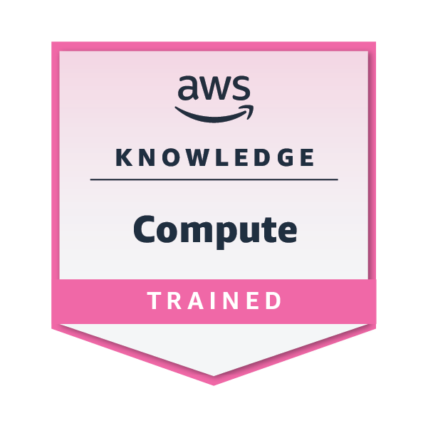
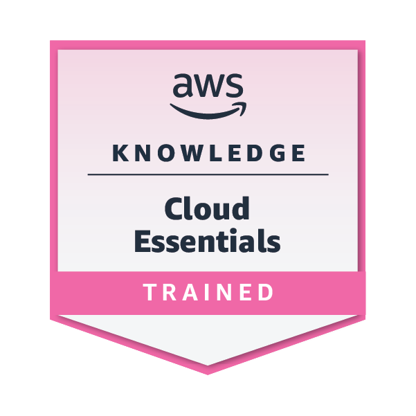

cloud credentials
Learning in public,
building in the cloud.
A collection of verified cloud and AI achievements that mark the tools, concepts, and continued learning behind the work I do across technology programs and solutions architecture.
01 / verified achievements
Cloud badges &
foundations.
Each credential represents another layer of fluency—from cloud fundamentals to AI and the practical choices that help teams move from strategy to delivery.
View full Credly profile ↗Microsoft · Learning
AI Skills Fest
2026
Foundational and applied AI learning focused on practical use cases, productivity, content creation, and responsible AI.
view on Credly ↗
AWS · Learning
Machine Learning
Foundations
Training in core machine learning concepts and applying the machine learning pipeline to solve business problems.
view on Credly ↗
AWS · Certification
AWS Certified:
AI Practitioner
Foundational fluency in AI, machine learning, generative AI, AWS services, security, and responsible use.
view on Credly ↗
AWS · Recognition
AI Practitioner
Early Adopter
Recognition for passing the AWS Certified AI Practitioner exam during the certification’s early-adopter period.
view on Credly ↗
AWS · Learning
AWS Knowledge:
Compute
Knowledge of AWS compute concepts and services, with a focus on Amazon EC2 and cloud compute foundations.
view on Credly ↗
AWS · Learning
AWS Knowledge:
Cloud Essentials
Foundational knowledge across AWS compute, storage, networking, databases, security, architecture, and pricing.
view on Credly ↗Google Cloud · Certification
Cloud Digital
Leader
Cloud fluency across Google Cloud products, business use cases, data, AI, security, and digital transformation.
view on Credly ↗
AWS · Certification
AWS Certified:
Cloud Practitioner
Core knowledge of AWS cloud concepts, services, security, architecture, pricing, and support.
view on Credly ↗